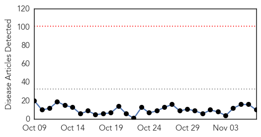
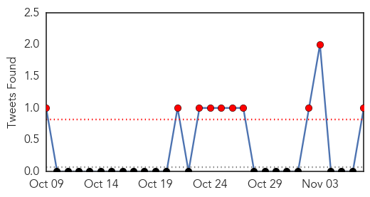

Dengue Fever
30-Day Web Trend
0 alerts, 0 warnings

30-Day Twitter Trend
10 alerts, 0 warnings

Article Locations

Article Confidences

Top Articles:
- 0.996
- Dengue fever outbreak in Hawaii
- 0.996
- Dengue fever outbreak in Hawaii
- 0.996
- Sudanese, WHO officials inspect health situation in West Darfur
- 0.985
- Dengue Fever: Four More Cases Confirmed
- 0.981
- Health officials: 23 confirmed cases of dengue fever on Big Isla
- 0.981
- Improving communication, information about dengue fever
- 0.961
- 23 confirmed dengue cases on Big Island
- 0.934
- Dengue vaccine hurdles clinical trials; 2015 market rollout seen
- 0.861
- Will funding issues derail the dengue vaccine trial?
- 0.691
- New funding boosts research for controlling TB, malaria, dengue and leishmaniasis
Top Tweets:
- 0.534
- Flavivirus news: Hawaii dengue outbreak tops 20 - Outbreak News Today: Outbreak News TodayHawai... https://t.co/LdfgJMQ2l0 pathogenposse
Pertussis
30-Day Web Trend
0 alerts, 0 warnings
30-Day Twitter Trend
0 alerts, 0 warnings

Article Locations

Article Confidences

Top Articles:
Top Tweets:
-
No tweets found for Nov 07, 2015